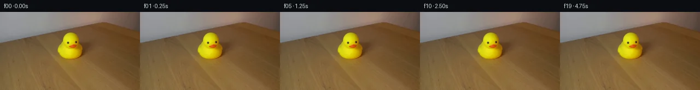

![首帧]()

Round 00
2026-11-06T08:12:03.595763+00:00像素候选变化代码 +126/−0inspection 更新
pixels 9141763c236fdddf · code 9ba1daaf91543377
查看本轮 generate.py 真实 diff
--- previous/generate.py
+++ current/generate.py
@@ -0,0 +1,126 @@
+#!/usr/bin/env python3
+"""PixelWorld-Vision-Input generator for case_0061.
+
+Physics: locked-off camera, constant lighting, duck stationary on the table
+and no described action. The correct 5 s continuation is a perfectly static
+scene, so every one of the 20 frames is an exact copy of first_frame.png.
+No pixels are synthesised, warped, filtered, or noised.
+"""
+from pathlib import Path
+import shutil
+
+import numpy as np
+from PIL import Image, ImageDraw
+
+import artifact_io
+
+CASE_DIR = Path(__file__).resolve().parent
+FRAMES_N = 20
+H, W = 144, 256
+
+
+def build_frames():
+ first = np.array(Image.open(CASE_DIR / "first_frame.png").convert("RGB"))
+ assert first.shape == (H, W, 3) and first.dtype == np.uint8, first.shape
+ # Exact replication: one shared source copied 20 times, byte for byte.
+ frames = np.broadcast_to(first, (FRAMES_N, H, W, 3)).copy()
+ return frames
+
+
+def pack_rgb(frames):
+ p = frames.astype(np.uint32)
+ return (p[:, :, :, 0] << 16) | (p[:, :, :, 1] << 8) | p[:, :, :, 2]
+
+
+def render_transition_check(frames, packed):
+ """Absolute-difference panels + numeric stats for all 19 transitions."""
+ panel_w, panel_h = 128, 72
+ cols, rows = 5, 4 # 19 transitions + 1 closing check (19 -> 0)
+ legend_h = 40
+ sheet = Image.new("RGB", (cols * panel_w, legend_h + rows * (panel_h + 14)),
+ (24, 27, 34))
+ draw = ImageDraw.Draw(sheet)
+ draw.text((4, 4),
+ "transition_check |d| x32 amplified; expect all-black, 0 changed px (stationary scene)",
+ fill=(235, 238, 245))
+
+ stats = []
+ for i in range(FRAMES_N):
+ t = (i + 1) % FRAMES_N # 0->1 ... 18->19, then 19->0 closing loop
+ a = frames[i].astype(np.int16)
+ b = frames[t].astype(np.int16)
+ diff = np.abs(a - b)
+ changed = int(np.count_nonzero(diff.any(axis=2)))
+ maxd = int(diff.max())
+ stats.append((i, t, changed, maxd))
+ amp = np.clip(diff * 32, 0, 255).astype(np.uint8)
+ panel = Image.fromarray(amp).resize((panel_w, panel_h), Image.NEAREST)
+ cx = (i % cols) * panel_w
+ cy = legend_h + (i // cols) * (panel_h + 14)
+ sheet.paste(panel, (cx, cy))
+ label = f"{i:02d}->{t:02d}: {changed}px max{maxd}"
+ draw.text((cx + 3, cy + panel_h + 1), label, fill=(190, 220, 170))
+
+ out = CASE_DIR / "transition_check.png"
+ sheet.save(out)
+ return stats
+
+
+def verify(frames, packed):
+ """Reload every artifact from disk and check it against the uint32 tensor."""
+ ok = True
+
+ # pixels.npz: stored tensor is (144, 256, 20), packed 0xRRGGBB uint32.
+ tensor = np.load(CASE_DIR / "pixels.npz")["pixels"]
+ assert tensor.shape == (H, W, FRAMES_N) and tensor.dtype == np.uint32, tensor.shape
+ if not np.array_equal(tensor.transpose(2, 0, 1), packed):
+ ok = False
+ print("VERIFY FAIL: pixels.npz tensor mismatch")
+
+ # Each PNG on disk must equal the tensor frame.
+ for t in range(FRAMES_N):
+ png = np.array(Image.open(CASE_DIR / "frames" / f"{t:02d}.png").convert("RGB"))
+ p = png.astype(np.uint32)
+ png_packed = (p[:, :, 0] << 16) | (p[:, :, 1] << 8) | p[:, :, 2]
+ if not np.array_equal(png_packed, packed[t]):
+ ok = False
+ print(f"VERIFY FAIL: frames/{t:02d}.png != tensor")
… diff truncated; 39 more lines …